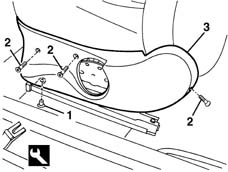

7045A43 seat exterior guard - r r
- Path
- Procedures > 70 FITTINGS > 7045 FRONT SEATS > 7045A front seat assembly > 7045A43 seat exterior guard - r r
- Kind
- repair procedure (removal / refitting; the operation number is the code)
- Applies to
- all engines; all production periods
- Interactive page
- https://sloeber94.github.io/elrnDB-lYpsln/en/#/2429612
Applies to: all engines; all production periods
 Removing
Removing
 Refitting
Refitting7045A56 LEVER controlling DRIVER'S seat height adjustment device - R.R .
1. Release the retaining button using the special tool.
 | Name | Country |
|---|---|---|
1 | Scraper blade | 1.878.077.000 |
2. Undo the bolts.
3. Remove the shield.

Applies to: all engines; all production periods
Refitting
RemovingCheck that the guard is undamaged.
Position the shield and fix it using the bolts
Fit the retaining button.
7045A56 LEVER controlling DRIVER'S seat height adjustment device - R.R .
Topics linked from this page (1)
Topics that link to this page (16)
- 5580C86 side bag wiring harness (one) lh or rh - r r or replace
- 7045A14 Front seat CUSHION ASSEMBLY (one), left or right - R.R.
- 7045A18 FRONT SEAT BACKREST ASSEMBLY (ONE), LEFT OR RIGHT - R.R.
- 7045A36 drivers seat manual height adjustment device - r r
- 7045A51 SQUAB LUMBAR REINFORCEMENT ON FRONT SEAT, . (ONE) LEFT or RIGHT - R.R .
- 7045A70 front seat support/guide - driver`s side with lift device - r r with seat removed
- 7045A71 front seat support/guide - driver`s side with lift device - r r
- 7045A72 front seat mount/guide - passenger`s side r r with seat removed
- 7045A73 front seat mount/guide - passenger`s side r r
- 7045A78 Front seat BACKREST FRAME. (one), left or right - R.R.
- 7045B06 GUIDE BUSH for (one), front seat head restraint left or right - R.R.
- 7045D10 Front seat TRIM, left or right - R.R .
- 7045D20 Front seat CUSHION COVER, left or right - R.R .
- 7045D21 Front seat CUSHION COVER, left or right - R.R. with seat removed
- 7045D30 Front seat BACKREST COVER, left or right - R.R.
- 7045L30 Backrest folding control CABLE/ROD - R.R.